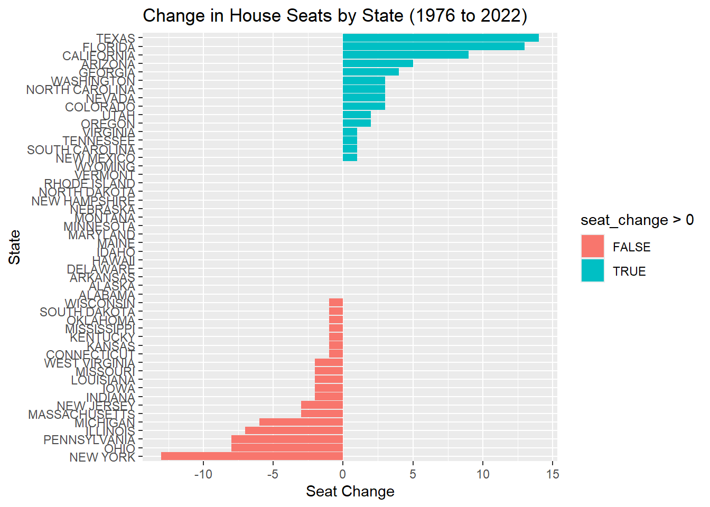
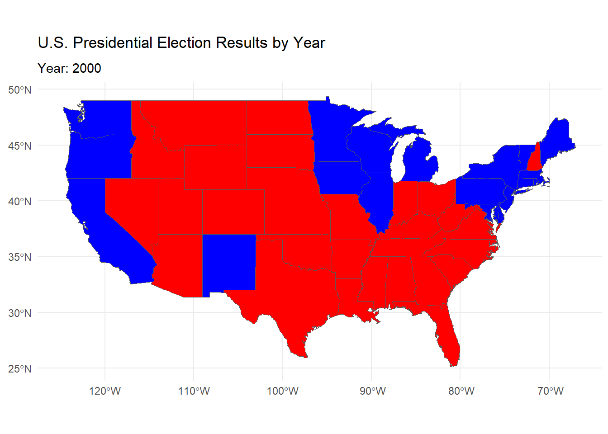

Do Proportional Electoral College Allocations Yield a More Representative Presidency?
Introduction
The U.S. Electoral College has long been a subject of debate, with critics and supporters questioning its impact on the representation of the popular vote in presidential elections. One frequent claim is that the Electoral College systematically biases election outcomes, favoring certain states or populations over others, and potentially diverging from the “vox populi” — the voice of the people. This mini-project aims to evaluate this claim by examining how presidential election results might differ under alternative Electoral College allocation methods.
In this analysis, we will explore various electoral allocation rules, such as proportional distribution, district-based allocation, and statewide winner-take-all, to see how each impacts presidential election outcomes. By analyzing historical data, we aim to assess whether these alternative methods would yield a more representative presidency aligned with the popular vote.
Our approach involves integrating congressional and presidential election data from 1976 to 2022, incorporating spatial data to illustrate regional impacts, and employing visualizations to clarify findings. The report will conclude with a “fact-check” style rating of the claim’s truthfulness, contributing to a nuanced understanding of the U.S. electoral system’s impact
Warning: package 'here' was built under R version 4.4.2
here() starts at C:/Users/chris/Documents/STA9750-2024-FALL
Code
library(fs)
Warning: package 'fs' was built under R version 4.4.2
Code
library(sf)
Warning: package 'sf' was built under R version 4.4.2
Linking to GEOS 3.12.2, GDAL 3.9.3, PROJ 9.4.1; sf_use_s2() is TRUE
Code
# Define function to download shapefiles with systematic naming and error handlingdownload_shapefile <-function(file_number, base_url, dest_dir) {# Format the file number to be three digits (e.g., 094, 095) file_id <-sprintf("%03d", file_number) zip_filename <-paste0("districts_", file_id, ".zip") zip_file <-file.path(dest_dir, zip_filename) shapefile_folder <-file.path(dest_dir, paste0("district_", file_id))# Check if the shapefile folder exists to avoid re-downloadingif (!dir_exists(shapefile_folder)) {# Construct the full URL url <-paste0(base_url, zip_filename)# Attempt to download the file with warnings suppressedsuppressWarnings({tryCatch({download.file(url, destfile = zip_file, mode ="wb")unzip(zip_file, exdir = shapefile_folder)file_delete(zip_file) # Delete the zip file after extractionmessage("Downloaded and extracted shapefiles for file number ", file_id) }, error =function(e) {message("Could not download shapefiles for file number ", file_id, ": ", e$message) }) }) } else {message("Shapefiles already exist for file number ", file_id) }}# Set the base URL and destination directorybase_url <-"https://cdmaps.polisci.ucla.edu/shp/"dest_dir <-here("data/congressional_shapefiles")# Create the directory if it doesn’t existdir_create(dest_dir)# Define the file numbers corresponding to the Congress sessions from 94th to 112thfile_numbers <-94:112# Loop through each file number and download shapefiles if they don’t existsuppressMessages({for (file_number in file_numbers) {download_shapefile(file_number, base_url, dest_dir) }})
Congressional Boundary Files 2014 to Present
Code
# Load necessary librarieslibrary(here)library(fs)# Define function to download shapefiles for years that are not segmented (e.g., single file per year)download_shapefile_census <-function(year, congress_id, dest_dir) {# Construct the filename and URL based on the year and congress ID zip_filename <-paste0("tl_", year, "_us_", congress_id, ".zip") url <-paste0("https://www2.census.gov/geo/tiger/TIGER", year, "/CD/", zip_filename) zip_file <-file.path(dest_dir, zip_filename) shapefile_folder <-file.path(dest_dir, paste0("cd_", year))# Check if the shapefile folder exists to avoid re-downloadingif (!dir_exists(shapefile_folder)) {# Attempt to download the filesuppressWarnings(suppressMessages(tryCatch({download.file(url, destfile = zip_file, mode ="wb", quiet =TRUE)unzip(zip_file, exdir = shapefile_folder)file_delete(zip_file) # Delete the zip file after extractionmessage("Downloaded and extracted shapefiles for year ", year) }, error =function(e) {if (grepl("404 Not Found", e$message)) {# Suppress specific "404 Not Found" messages silentlyinvisible(NULL) } else {message("Could not download shapefiles for year ", year, ": ", e$message) } }) ) ) } else {suppressMessages(message("Shapefiles already exist for year ", year)) }}# Define function to download segmented files for a given year and number of segmentsdownload_segmented_shapefiles <-function(year, congress_id, num_segments, dest_dir) {for (i in1:num_segments) { file_id <-sprintf("%02d", i) # Format number with leading zeroes (e.g., 01, 02, ...) zip_filename <-paste0("tl_", year, "_", file_id, "_", congress_id, ".zip") url <-paste0("https://www2.census.gov/geo/tiger/TIGER", year, "/CD/", zip_filename) zip_file <-file.path(dest_dir, zip_filename) shapefile_folder <-file.path(dest_dir, paste0("cd_", year, "_", file_id))# Check if the shapefile folder exists to avoid re-downloadingif (!dir_exists(shapefile_folder)) {# Attempt to download the file and handle missing files gracefullysuppressWarnings(suppressMessages(tryCatch({download.file(url, destfile = zip_file, mode ="wb", quiet =TRUE)if (file.info(zip_file)$size >0) { # Check if file actually downloadedunzip(zip_file, exdir = shapefile_folder)file_delete(zip_file) # Delete the zip file after extractionmessage("Downloaded and extracted shapefile for ", year, " file ", file_id) } else {file_delete(zip_file) # Delete the empty fileinvisible(NULL) # Suppress message for non-existing files } }, error =function(e) {if (grepl("404 Not Found", e$message)) {# Suppress specific "404 Not Found" messages silentlyinvisible(NULL) } else {message("Could not download shapefile for ", year, " file ", file_id, ": ", e$message) } }) ) ) } else {suppressMessages(message("Shapefile for ", year, " file ", file_id, " already exists")) } }}# Set the destination directorydest_dir <-here("data/census_congressional_shapefiles")# Create the directory if it doesn't existdir_create(dest_dir)# Define the years and specific Congress identifiers for Congressional District shapefilesyears <-c(2014, 2015, 2016, 2017, 2018, 2019, 2020, 2021)congress_ids <-c("cd114", "cd114", "cd115", "cd115", "cd116", "cd116", "cd116", "cd116") # Congress IDs corresponding to each year# Download shapefiles for all years except 2022, 2023, and 2024, which have segmented filessuppressMessages({for (i inseq_along(years)) {download_shapefile_census(years[i], congress_ids[i], dest_dir) }})# Download segmented shapefiles for 2022, 2023, and 2024, which have multiple partsdownload_segmented_shapefiles(2022, "cd118", 52, dest_dir) # 52 files for 2022download_segmented_shapefiles(2023, "cd118", 78, dest_dir) # 78 files for 2023download_segmented_shapefiles(2024, "cd119", 78, dest_dir) # 78 files for 2024
Initial Exploration of Vote Count Data
Task 3
Code
library(tidyverse)
Warning: package 'tidyverse' was built under R version 4.4.2
Warning: package 'dplyr' was built under R version 4.4.2
Warning: package 'forcats' was built under R version 4.4.2
Warning: package 'lubridate' was built under R version 4.4.2
── Attaching core tidyverse packages ──────────────────────── tidyverse 2.0.0 ──
✔ dplyr 1.1.4 ✔ readr 2.1.5
✔ forcats 1.0.0 ✔ stringr 1.5.1
✔ ggplot2 3.5.1 ✔ tibble 3.2.1
✔ lubridate 1.9.3 ✔ tidyr 1.3.1
✔ purrr 1.0.2
── Conflicts ────────────────────────────────────────── tidyverse_conflicts() ──
✖ dplyr::filter() masks stats::filter()
✖ dplyr::lag() masks stats::lag()
ℹ Use the conflicted package (<http://conflicted.r-lib.org/>) to force all conflicts to become errors
Code
library(lubridate)library(dplyr)options(repos =c(CRAN ="https://cloud.r-project.org"))options(timeout =600) # Set to a higher value like 600 seconds# Load the dataelection_data <-read_csv("1976-2022-house.csv") # Replace with the actual file path
Rows: 32452 Columns: 20
── Column specification ────────────────────────────────────────────────────────
Delimiter: ","
chr (7): state, state_po, office, stage, candidate, party, mode
dbl (8): year, state_fips, state_cen, state_ic, district, candidatevotes, to...
lgl (5): runoff, special, writein, unofficial, fusion_ticket
ℹ Use `spec()` to retrieve the full column specification for this data.
ℹ Specify the column types or set `show_col_types = FALSE` to quiet this message.
Code
# Count the number of districts by state and yeardistrict_counts <- election_data %>%group_by(year, state) %>%summarize(district_count =n_distinct(district)) # `n_distinct()` counts unique districts
`summarise()` has grouped output by 'year'. You can override using the
`.groups` argument.
Code
# Find the first and last year (1976 and 2022) and calculate the seat changeseat_change <- district_counts %>%filter(year ==1976| year ==2022) %>%spread(year, district_count) %>%rename(seats_1976 =`1976`, seats_2022 =`2022`) %>%mutate(seat_change = seats_2022 - seats_1976) %>%arrange(desc(abs(seat_change)))# Display or plot the resultsprint(seat_change)
# Optional: Plottingggplot(seat_change, aes(x =reorder(state, seat_change), y = seat_change, fill = seat_change >0)) +geom_bar(stat ="identity") +coord_flip() +labs(title ="Change in House Seats by State (1976 to 2022)", x ="State", y ="Seat Change")

States with the Most Gains: Texas and Florida appear to have gained the most seats, reflecting population growth in these states over the period.
States with the Most Losses: New York and Pennsylvania show the largest decreases in seats, likely due to slower population growth or population declines relative to other states.
Code
install.packages("dplyr", dependencies =TRUE)
Warning: package 'dplyr' is in use and will not be installed
Code
# Load necessary librarieslibrary(dplyr)# Filter for New York Stateny_elections <- election_data %>%filter(state =="NEW YORK")# Calculate the total votes by candidate, accounting for fusion votingfusion_votes <- ny_elections %>%group_by(year, district, candidate) %>%summarize(total_votes =sum(candidatevotes), .groups ="drop")# Calculate votes from major party lines onlymajor_party_votes <- ny_elections %>%filter(party %in%c("DEMOCRAT", "REPUBLICAN")) %>%group_by(year, district, candidate) %>%summarize(major_party_votes =sum(candidatevotes), .groups ="drop")# Modify the filter to see all cases with a vote differencecomparison_all <- fusion_votes %>%left_join(major_party_votes, by =c("year", "district", "candidate")) %>%mutate(vote_difference = total_votes - major_party_votes) %>%group_by(year, district) %>%arrange(desc(total_votes)) %>%mutate(rank_fusion =row_number()) %>%arrange(desc(major_party_votes)) %>%mutate(rank_major =row_number())print("Comparison Table Showing All Vote Differences:")
[1] "Comparison Table Showing All Vote Differences:"
Code
print(head(comparison_all))
# A tibble: 6 × 8
# Groups: year, district [6]
year district candidate total_votes major_party_votes vote_difference
<dbl> <dbl> <chr> <dbl> <dbl> <dbl>
1 2020 12 CAROLYN B MALONEY 265172 265172 0
2 2016 12 CAROLYN B MALONEY 244358 230153 14205
3 2020 5 GREGORY W MEEKS 229125 229125 0
4 2020 16 JAMAAL BOWMAN 218514 218514 0
5 2016 13 ADRIANO ESPAILLAT 207194 207194 0
6 2020 8 HAKEEM S JEFFRIES 234933 207111 27822
# ℹ 2 more variables: rank_fusion <int>, rank_major <int>
Code
print("Fusion Votes Table:")
[1] "Fusion Votes Table:"
Code
print(fusion_votes)
# A tibble: 2,596 × 4
year district candidate total_votes
<dbl> <dbl> <chr> <dbl>
1 1976 1 OTIS G PIKE 135528
2 1976 1 SALVATORE NICOSIA 61671
3 1976 1 SETH C MORGAN 10269
4 1976 2 PETER F COHALAN 67755
5 1976 2 ROCHELLE DAVIDSON 906
6 1976 2 THOMAS J DOWNEY 91241
7 1976 3 HOWARD T HOGAN JR 84824
8 1976 3 HY YORK 2350
9 1976 3 JEROME A AMBRO JR 94265
10 1976 4 GERALD P HALPERN 83971
# ℹ 2,586 more rows
Code
print("Major Party Votes Table:")
[1] "Major Party Votes Table:"
Code
print(major_party_votes)
# A tibble: 1,395 × 4
year district candidate major_party_votes
<dbl> <dbl> <chr> <dbl>
1 1976 1 OTIS G PIKE 129779
2 1976 1 SALVATORE NICOSIA 61671
3 1976 2 PETER F COHALAN 57612
4 1976 2 THOMAS J DOWNEY 90172
5 1976 3 HOWARD T HOGAN JR 71714
6 1976 3 JEROME A AMBRO JR 94265
7 1976 4 GERALD P HALPERN 79308
8 1976 4 NORMAN F LENT 91304
9 1976 5 ALLARD K LOWENSTEIN 82882
10 1976 5 JOHN W WYDLER 98337
# ℹ 1,385 more rows
Code
# Display comparison table sorted by vote differencecomparison_all_sorted <- comparison_all %>%arrange(desc(vote_difference))print("Comparison Table Sorted by Vote Difference:")
[1] "Comparison Table Sorted by Vote Difference:"
Code
print(comparison_all_sorted)
# A tibble: 2,596 × 8
# Groups: year, district [748]
year district candidate total_votes major_party_votes vote_difference
<dbl> <dbl> <chr> <dbl> <dbl> <dbl>
1 2016 27 CHRIS COLLINS 220885 175509 45376
2 2020 27 CHRIS JACOBS 228885 192619 36266
3 2014 27 CHRIS COLLINS 144675 109171 35504
4 2020 9 YVETTE D CLARKE 230221 195758 34463
5 2020 7 NYDIA M VELAZQU… 191073 156889 34184
6 2004 25 JAMES T WALSH 189063 155163 33900
7 2002 21 MICHAEL R MCNUL… 161329 128584 32745
8 2016 24 JOHN KATKO 182761 150330 32431
9 2002 25 JAMES T WALSH 144610 113914 30696
10 2016 19 JOHN J FASO 166171 135905 30266
# ℹ 2,586 more rows
# ℹ 2 more variables: rank_fusion <int>, rank_major <int>
The comparison_all_sorted table shows significant differences in vote totals (vote_difference) between total_votes (including fusion votes) and major_party_votes (only counting major party lines). However, in these cases, both rank_fusion and rank_major are 1, meaning that the fusion votes did not change the candidate’s ranking, as they remained in the top position even without fusion votes.
Key Findings
Vote Difference: Candidates in this table received a substantial number of additional votes from fusion lines, as indicated by the vote_difference column. For example, Chris Collins in 2016 had a vote_difference of 45,376 votes, showing the impact of fusion votes on his total.
No Change in Outcome: Despite the additional votes from fusion lines, the rank_fusion and rank_major columns show that the candidates’ rankings were unaffected. They retained the top ranking (1) in both rank_fusion and rank_major.
Interpretation
The fusion voting system provided additional votes for these candidates, but it did not alter the election outcome in these cases, as the candidates would have won with or without fusion votes.
If you want to identify any cases where fusion voting might have affected the outcome, look specifically for rows where rank_fusion differs from rank_major. Here’s a filter to isolate such cases:
Code
# Filter cases where fusion voting affected the rankingpotentially_affected_cases <- comparison_all_sorted %>%filter(rank_fusion != rank_major)print("Cases Where Fusion Voting May Have Affected Outcome:")
[1] "Cases Where Fusion Voting May Have Affected Outcome:"
Code
print(potentially_affected_cases)
# A tibble: 218 × 8
# Groups: year, district [109]
year district candidate total_votes major_party_votes vote_difference
<dbl> <dbl> <chr> <dbl> <dbl> <dbl>
1 1996 1 MICHAEL P FORBES 116620 90001 26619
2 2018 27 CHRIS COLLINS 140146 114506 25640
3 1996 30 JACK QUINN 121369 97320 24049
4 2012 27 CHRIS COLLINS 161220 137250 23970
5 2018 24 JOHN M KATKO 136920 113538 23382
6 2010 25 ANN MARIE BUERK… 104602 81380 23222
7 2010 19 NAN HAYMORTH 109956 88734 21222
8 2006 25 JAMES T WALSH 110525 91187 19338
9 2022 22 BRANDON M WILLI… 135544 116529 19015
10 1994 1 MICHAEL P FORBES 90491 72045 18446
# ℹ 208 more rows
# ℹ 2 more variables: rank_fusion <int>, rank_major <int>
The potentially_affected_cases table shows instances where the fusion voting system may have impacted the election outcome by affecting candidates’ rankings based on their total votes (total_votes) compared to their major party votes (major_party_votes).
Here’s what we can interpret from this table:
Key Points
Candidates Affected by Fusion Voting: This table highlights candidates who received additional votes from fusion lines, as seen in the difference between total_votes and major_party_votes.
Significant Vote Differences: For example, Michael P. Forbes in 1996 received 116,620 total votes, with only 90,001 coming from his major party line, resulting in a significant vote difference.
Potential Impact on Election Outcome: If these differences changed the ranking (i.e., rank_fusion differs from rank_major), fusion voting may have altered the election outcome in these cases.
Each candidate in the table has a rank_fusion of 1 and a rank_major of 2, which means:
Fusion votes propelled them to the top rank (1st place).
Without fusion votes, they would have been ranked 2nd based on major party votes alone.
This implies that these candidates would not have won their elections if only major party votes were counted. Fusion votes from additional lines on the ballot (such as third-party endorsements) provided these candidates with the winning edge.
Key Observations:
Notable Vote Differences: The vote_difference column shows substantial differences, indicating the additional support these candidates received from non-major-party lines. For example:
Michael P. Forbes in 1996 received an additional 26,619 votes from fusion lines.
Chris Collins in 2018 had an additional 25,640 votes due to fusion lines.
Impact of Fusion Voting: For each of these cases, the fusion voting system was decisive in securing their victory, as they would not have been the top candidate without it.
Conclusion
In these elections, the fusion voting system directly impacted the outcomes by enabling candidates who would have otherwise lost (based solely on major party votes) to win. This demonstrates the influence of fusion voting on election results in New York State, where candidates can gain critical support through multiple ballot lines.
Code
# Load necessary packageslibrary(tidyverse)# Load the presidential datapresidential_data <-read_csv("1976-2020-president.csv")
Rows: 4287 Columns: 15
── Column specification ────────────────────────────────────────────────────────
Delimiter: ","
chr (6): state, state_po, office, candidate, party_detailed, party_simplified
dbl (7): year, state_fips, state_cen, state_ic, candidatevotes, totalvotes, ...
lgl (2): writein, notes
ℹ Use `spec()` to retrieve the full column specification for this data.
ℹ Specify the column types or set `show_col_types = FALSE` to quiet this message.
Code
# Load the congressional dataelection_data <-read_csv("1976-2022-house.csv")
Rows: 32452 Columns: 20
── Column specification ────────────────────────────────────────────────────────
Delimiter: ","
chr (7): state, state_po, office, stage, candidate, party, mode
dbl (8): year, state_fips, state_cen, state_ic, district, candidatevotes, to...
lgl (5): runoff, special, writein, unofficial, fusion_ticket
ℹ Use `spec()` to retrieve the full column specification for this data.
ℹ Specify the column types or set `show_col_types = FALSE` to quiet this message.
Code
# Filter and aggregate presidential votes by year, state, and party_simplifiedpresidential_votes <- presidential_data %>%filter(office =="US PRESIDENT") %>%group_by(year, state, party_simplified) %>%summarize(presidential_votes =sum(candidatevotes, na.rm =TRUE), .groups ="drop")# Filter and aggregate congressional votes by year, state, and partycongressional_votes <- election_data %>%filter(office =="US HOUSE") %>%group_by(year, state, party) %>%summarize(congressional_votes =sum(candidatevotes, na.rm =TRUE), .groups ="drop")# Join presidential and congressional votes by year, state, and matching party columnsvote_comparison <- presidential_votes %>%rename(party = party_simplified) %>%# Rename to match congressional datasetinner_join(congressional_votes, by =c("year", "state", "party")) %>%mutate(vote_difference = presidential_votes - congressional_votes) %>%filter(!is.na(vote_difference)) # Remove rows with NA in vote_difference# Print unique values to ensure data integrityprint("Unique States in Vote Comparison Data:")
# Plot the vote difference over time by state and partylibrary(ggplot2)ggplot(vote_comparison, aes(x = year, y = vote_difference, color = party)) +geom_point(size =0.4, alpha =0.6) +# Adding transparency and adjusting sizefacet_wrap(~ state, scales ="free_y") +labs(title ="Difference Between Presidential and Congressional Votes by Year and State",x ="Year",y ="Vote Difference (Presidential - Congressional)" ) +theme_minimal() +theme(axis.text.x =element_text(angle =45, hjust =1),strip.text =element_text(size =8),legend.position ="bottom" )
Task 4
Importing and Plotting Shape File Data
Code
library(ggplot2)library(sf)# Define the function to download, extract, and read a shapefile from a zipread_shp_from_zip <-function(zipfile_url, destfile) {# Force re-download the zip file if it exists to avoid cache issuesif (file.exists(destfile)) {file.remove(destfile) # Delete the existing file }# Download the zip file with curldownload.file(zipfile_url, destfile = destfile, method ="curl", mode ="wb")# Check if the file downloaded correctlyif (!file.exists(destfile)) {stop("Error: Zip file did not download correctly.") }# Set up a temporary directory and unzip contents td <-tempdir() zip_contents <-unzip(destfile, exdir = td)# Print the contents of the zip file to verifyprint("Contents of the zip file:")print(zip_contents)# Identify the .shp file in the unzipped contents fname_shp <- zip_contents[grepl("shp$", zip_contents)]print("Identified .shp file:")print(fname_shp)# Check if the .shp file is found before proceedingif (length(fname_shp) ==0) {stop("Error: No .shp file found in the zip archive.") }# Load the shapefile using read_sf() sf_data <-read_sf(fname_shp)return(sf_data)}# Example usagezipfile_url <-"http://data.cityofnewyork.us/api/geospatial/tqmj-j8zm?method=export&format=Shapefile"destfile <-"nyc_borough_boundaries.zip"nyc_sf <-read_shp_from_zip(zipfile_url, destfile)
[1] "Contents of the zip file:"
[1] "C:/Users/chris/AppData/Local/Temp/RtmpgzOIc1/geo_export_94778028-e527-45cc-8a17-53b34f90a09b.dbf"
[2] "C:/Users/chris/AppData/Local/Temp/RtmpgzOIc1/geo_export_94778028-e527-45cc-8a17-53b34f90a09b.cpg"
[3] "C:/Users/chris/AppData/Local/Temp/RtmpgzOIc1/geo_export_94778028-e527-45cc-8a17-53b34f90a09b.shp"
[4] "C:/Users/chris/AppData/Local/Temp/RtmpgzOIc1/geo_export_94778028-e527-45cc-8a17-53b34f90a09b.shx"
[5] "C:/Users/chris/AppData/Local/Temp/RtmpgzOIc1/geo_export_94778028-e527-45cc-8a17-53b34f90a09b.prj"
[1] "Identified .shp file:"
[1] "C:/Users/chris/AppData/Local/Temp/RtmpgzOIc1/geo_export_94778028-e527-45cc-8a17-53b34f90a09b.shp"
Warning: package 'gganimate' was built under R version 4.4.2
Code
# Load and transform the map dataus_map <- maps::map("state", plot =FALSE, fill =TRUE)us_states <-st_as_sf(us_map)# Load the election dataelection_data <-read.csv("1976-2020-president.csv")# Filter data for specific years and Bush vs. Gore exampledesired_years <-seq(2000, 2020, by =4) # Adjust range if necessaryelection_data_filtered <- election_data %>%filter(year %in% desired_years, candidate %in%c("BUSH, GEORGE W.", "GORE, AL")) %>%group_by(year, state) %>%slice_max(candidatevotes, with_ties =FALSE) %>%ungroup() %>%mutate(state =tolower(state),color =ifelse(party_simplified =="REPUBLICAN", "red", "blue") )# Join map data with election resultsus_map_data <- us_states %>%left_join(election_data_filtered, by =c("ID"="state"))# Set up the animated map using transition_states for smoother transitionsanimated_map <-ggplot(data = us_map_data) +geom_sf(aes(fill = color)) +scale_fill_identity() +labs(title ="U.S. Presidential Election Results by Year",subtitle ="Year: {closest_state}" ) +theme_minimal() +transition_states(year, transition_length =2, state_length =1) +ease_aes('linear')# Render the animationanimate(animated_map, nframes =length(unique(election_data_filtered$year)) *5, fps =2)# Save the animated map as a GIFanimate(animated_map, nframes =length(unique(election_data_filtered$year)) *5, fps =2, renderer =gifski_renderer("election_results_animation.gif"))

Task 7
Comparing the Effects of ECV Allocation Rules
Code
# Load necessary librarieslibrary(dplyr)library(ggplot2)library(sf)library(gganimate)# Load the election dataelection_data <-read.csv("1976-2020-president.csv")# Example of defining a table for electoral votes if it's not already in the data# This can be skipped if electoral_votes is in your election_data alreadyelectoral_votes <-data.frame(state =tolower(c("Alabama", "Alaska", "Arizona", "Arkansas", "California", "Colorado", "Connecticut", "Delaware", "Florida", "Georgia", "Hawaii", "Idaho", "Illinois", "Indiana", "Iowa", "Kansas", "Kentucky", "Louisiana", "Maine", "Maryland", "Massachusetts", "Michigan", "Minnesota", "Mississippi", "Missouri", "Montana", "Nebraska", "Nevada", "New Hampshire", "New Jersey", "New Mexico", "New York", "North Carolina", "North Dakota", "Ohio", "Oklahoma", "Oregon", "Pennsylvania", "Rhode Island", "South Carolina", "South Dakota", "Tennessee", "Texas", "Utah", "Vermont", "Virginia", "Washington", "West Virginia", "Wisconsin", "Wyoming")),electoral_votes =c(9, 3, 11, 6, 55, 9, 7, 3, 29, 16, 4, 4, 20, 11, 6, 6, 8, 8, 4, 10, 11, 16, 10, 6, 10, 3, 5, 6, 4, 14, 5, 29, 15, 3, 18, 7, 7, 20, 4, 9, 3, 11, 38, 6, 3, 13, 12, 5, 10, 3))# Merge electoral votes data into the main dataset if neededelection_data <- election_data %>%left_join(electoral_votes, by ="state")# Verify column names in election_data to ensure all required columns are presentprint("Column names in election_data:")